第05讲 循环神经网络（RNN）
一、从序列数据到循环神经网络
1.1 什么是序列模型？
到目前为止，我们处理的数据都是"一个输入对应一个输出"：一张图片进、一个类别出。但现实中大量数据是前后相连的序列——后一个元素与前边的元素密切相关：
| 应用 | 序列数据 |
|---|---|
| 语音识别 | 一段声波 → 一串文字 |
| 音乐生成 | 前面的音符 → 下一个音符 |
| 情感分析 | 一句话 → 褒义/贬义 |
| DNA 序列分析 | 一段碱基序列 → 功能标注 |
| 机器翻译 | 一种语言的句子 → 另一种语言的句子 |
| 视频动作识别 | 一串帧 → 动作类别 |
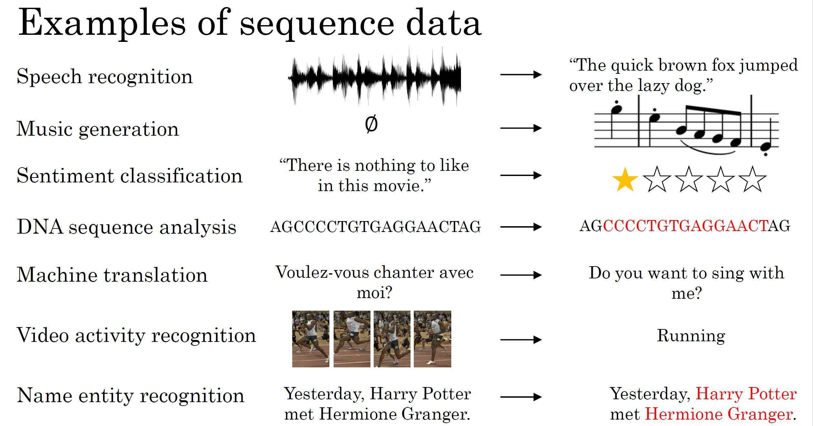
这类任务有两个新特点：第一，输入（甚至输出）的长度不固定，全连接网络要求输入维度固定，无法直接套用；第二，当前时刻的判断需要参考历史信息——听懂一句话的最后一个词，需要记住前面的词。
1.2 隐变量模型：用隐含状态总结过去
要让模型拥有"记忆"，一个自然的想法是：引入一个隐含状态（hidden state） \(h_t\)，它在每个时刻把"目前为止看到的一切"总结成一个向量：
第 \(t\) 时刻的隐含状态由上一时刻的隐含状态 \(h_{t-1}\) 和上一时刻的输入 \(x_{t-1}\) 共同决定。这样，信息就像接力棒一样沿时间一棒一棒传下去——\(h_t\) 里压缩着 \(x_1, x_2, \ldots, x_{t-1}\) 的全部相关历史。
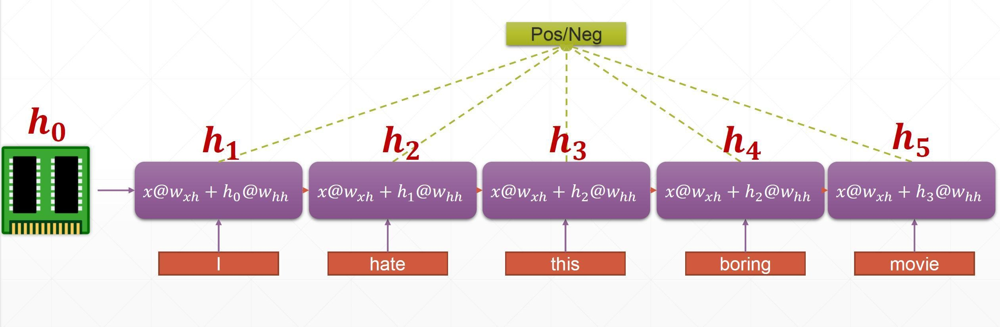
1.3 循环神经网络的基本结构
把上面的想法加上可学习的参数，就是循环神经网络（Recurrent Neural Network，RNN）。每个时间步做两件事：
① 隐含状态更新（记忆）：
② 输出更新（观察）：
其中 \(\phi\) 是非线性激活函数（常用 tanh）。注意 \(W_{hh} h_{t-1}\) 这一项——它把上一时刻的记忆带了进来；去掉它，网络就退化成普通的 MLP。
注：本节沿用"用 \(t-1\) 时刻输入更新 \(t\) 时刻状态"的下标约定；第三章起与多数教材一致，把当前输入记为 \(x_t\)。两者仅下标平移，含义相同。
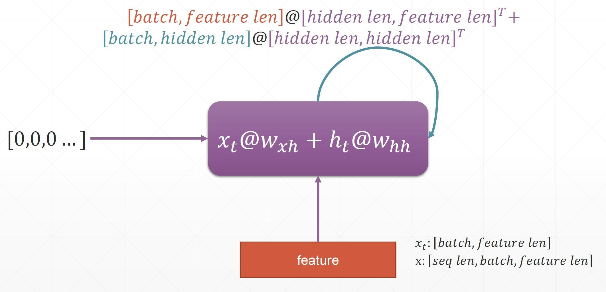
1.4 RNN 的五种类型
输入和输出都可以是"一个"或"一串"，组合出五种典型结构：
| 结构 | 名称 | 典型应用 |
|---|---|---|
| one to one | 一对一 | 图像分类（退化为普通网络） |
| one to many | 一对多 | 图像描述：一张图 → 一句话 |
| many to one | 多对一 | 文本分类、情感分析：一句话 → 一个类别 |
| many to many（等长） | 多对多（同步） | 词性标注、实体识别：每个词 → 一个标签 |
| many to many（不等长） | 多对多（异步） | 机器翻译：先读完整个句子，再逐词生成译文 |
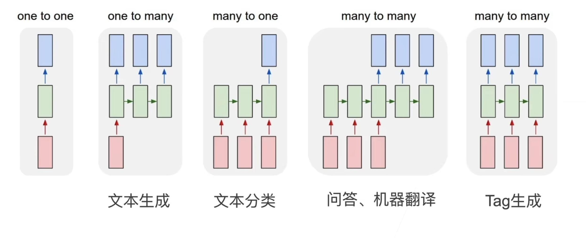
二、语言模型与困惑度
2.1 语言模型：给句子算概率
语言模型（language model）是序列建模最经典的任务：给定前面的词，预测下一个词的概率：
例如读完"深度学习是人工智能的"，模型应给"分支""核心"等词较高概率，给"香蕉"极低概率。RNN 天然适合这个任务：每读入一个词就更新一次隐含状态，再用输出层给出下一个词的概率分布。
2.2 困惑度：语言模型的成绩单
如何衡量语言模型的好坏？用平均交叉熵：对一个长度为 \(n\) 的序列，计算模型给每个真实词分配的概率的负对数平均值。但直接比较交叉熵不直观，NLP 中习惯取它的指数，称为困惑度（perplexity）：
| 困惑度取值 | 含义 |
|---|---|
| 1 | 完美模型：每次都把概率 1 给了正确的词 |
| 越小越好 | 可以理解为"模型平均每次在多少个词之间犹豫" |
| 无穷大 | 最差情况：给正确词的概率为 0 |
为什么要先取平均再取指数？因为不同长度的文本无法直接比较总对数似然——短文本的总损失天然更小。除以序列长度 \(n\) 做归一化后，长短文本的成绩才有可比性。
三、实现 RNN 语言模型
3.1 输入编码：one-hot 向量
计算机不能直接"读"文字，第一步要把每个词变成向量。最直接的做法是单热编码（one-hot）：词表有 \(V\) 个词，就用一个 \(V\) 维向量表示每个词——对应位置为 1，其余全为 0：
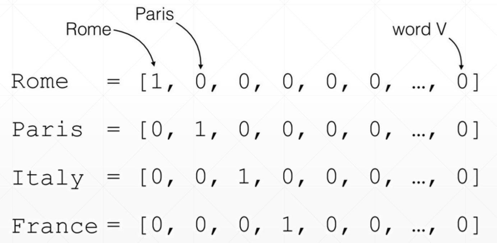
选择编码颗粒度时要权衡：按词切分词表大但语义完整；按字符切分词表小（英文仅几十个字母）但单字符没有语义。中文还可以按字或按词（分词）处理。
3.2 词嵌入：把稀疏向量变稠密
one-hot 有两个硬伤：维度太高（词表动辄几万）且稀疏；更重要的是它不含语义——从向量上看不出"猫"和"狗"比"猫"和"卡车"更相似。解决办法是乘一个可学习的嵌入矩阵 \(W_e\)（\(V \times d\)，\(d\) 通常几十到几百），把稀疏的 one-hot 压成稠密向量：
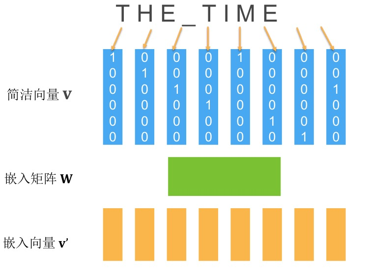
嵌入矩阵可以随任务一起训练，也可以直接加载在超大语料上预训练好的词向量（word2vec、GloVe）。训练好的词向量具有神奇的语义几何性质：语义相近的词在向量空间中也相近，甚至存在"国王 − 男人 + 女人 ≈ 女王"这样的类比关系。
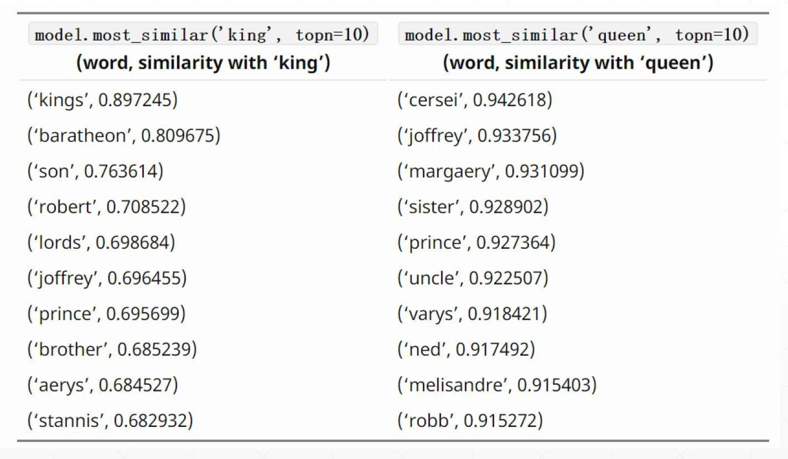
3.3 输出编码：softmax 概率分布
输出端是输入端的逆过程：隐含状态 \(h_t\) 先乘一个解码矩阵 \(W'\)，得到词表大小的分数向量，再过 softmax 变成概率分布——概率最大的词就是模型的预测：
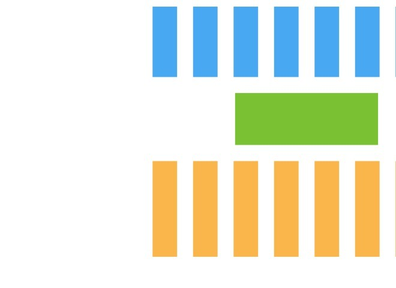
训练时用交叉熵损失让"正确词"的概率越来越大；生成时可以从分布中采样，也可以每步取概率最大的词（贪心解码）。
3.4 一个时间步的完整计算
把三节串起来，RNN 语言模型在一个时间步的完整流水线是：
- 1查嵌入：当前词 → one-hot → 乘嵌入矩阵得到稠密向量 \(x_t\)；
- 2更新记忆：\(h_t = \phi(W_{hh} h_{t-1} + W_{hx} x_t + b_h)\)；
- 3预测：\(o_t = W_{ho} h_t + b_o\)，softmax 得到词表概率分布；
- 4计损：与真实的下一个词算交叉熵，沿时间累加。
四、通过时间反向传播（BPTT）
4.1 沿时间展开的计算图
RNN 怎么训练？把它沿时间展开（unroll）：每个时间步都是一层，共享同一组参数，于是一个长度为 \(T\) 的序列就等价于一个 \(T\) 层的深网络，可以照常做反向传播——这就是通过时间反向传播（Backpropagation Through Time，BPTT）：
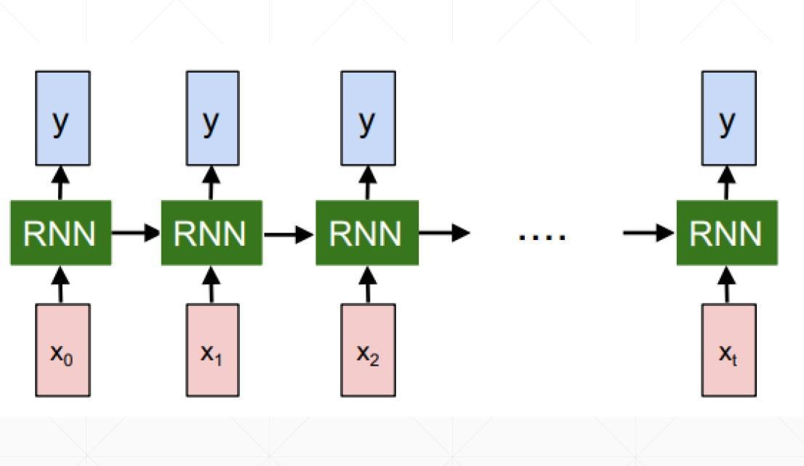
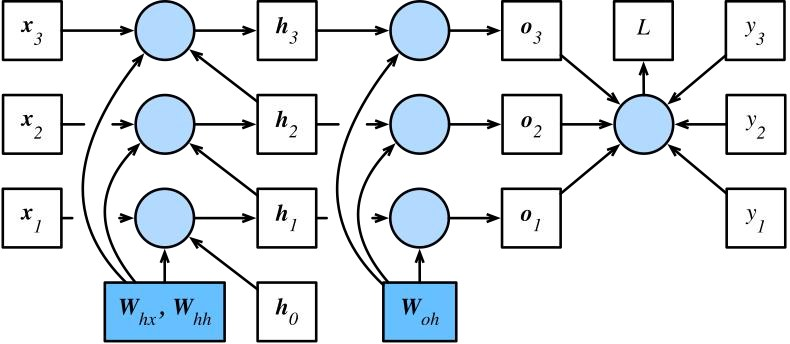
4.2 梯度链太长：消失与爆炸
问题在于：隐含状态的梯度是一条长度为 \(O(T)\) 的连乘链。对线性 RNN 可以严格推出，\(h_t\) 对远处 \(h_1\) 的梯度里含有 \(W_{hh}\) 的 \(T-t\) 次幂：
矩阵连乘 \(T\) 次，数值上只有两种命运——特征值小于 1 时梯度指数级消失（远处的历史学不到）；大于 1 时指数级爆炸（梯度冲上天，训练发散）。同时长链还要在内存里缓存所有中间值，开销巨大：
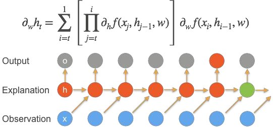
4.3 梯度剪裁：给梯度套上缰绳
梯度爆炸的应急处理简单有效：梯度剪裁（gradient clipping）——设一个阈值 \(\theta\)，如果梯度向量的范数超过它，就整体缩小到 \(\theta\)：
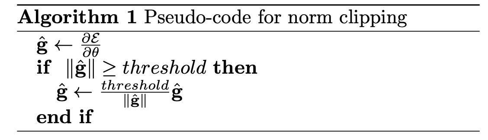
nn.utils.clip_grad_norm_ 即可。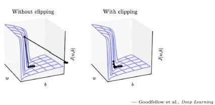
4.4 截断 BPTT：只看最近的一段历史
梯度消失意味着"很久以前的历史"反正也学不到，那就干脆只回传最近 \(\tau\) 步的梯度，更早的直接丢弃——这就是截断 BPTT：
- 前向传播照常跑完整序列（隐含状态继续传递，记忆不截断）；
- 反向传播只算到截断边界（通常与小批量边界对齐，如 \(\tau = 35\) 或 64 步）；
- 代价是学不到超过 \(\tau\) 步的超长依赖，换来的是稳定与速度。
五、门控循环单元（GRU）
5.1 动机：该记的记，该忘的忘
基本 RNN 对每个词都"一视同仁"地更新记忆，但直觉告诉我们：序列中并非所有元素都同等重要。读"中国的首都是北京"时，"中国""首都"值得记住，"的"可以忽略；遇到句号时，又应该清空上一句的记忆重新开始。我们希望网络自己学会两种机制：
- 更新的机制（更新门）：多大程度上保留旧记忆（门接近 1 时当前输入被忽略）；
- 遗忘/重置的机制（重置门）：多大程度上忘掉过去、只看当前。
门控循环单元（Gated Recurrent Unit，GRU）由 Cho 等人 2014 年提出，用两个可学习的"门"实现了这两个机制。门是一个 0~1 之间的向量：接近 1 表示"放行"，接近 0 表示"关断"。
5.2 重置门与更新门
两个门的计算方式与普通 RNN 单元相同，只是激活函数换成 sigmoid（把输出压到 0~1）：
其中 \(R_t\) 是重置门（reset gate），\(Z_t\) 是更新门（update gate）。它们的输入都是"当前词 + 上一时刻记忆"，但各有一套独立的权重，因此能学会不同的开关策略。

5.3 候选隐含状态与状态更新
两个门各司其职——重置门参与计算"候选"记忆：
\(\odot\) 是逐元素乘法。当 \(R_t \to 0\) 时，上一时刻的记忆被"重置"掉，\(\tilde{h}_t\) 几乎只看当前输入（相当于从头开始记）；当 \(R_t \to 1\) 时，就是普通 RNN 的算法。
更新门负责在新旧记忆之间做"加权平均"：
当 \(Z_t \to 1\)：完全保留旧记忆，当前输入被忽略（"这里不重要，跳过去"）；当 \(Z_t \to 0\)：完全采用新的候选状态。正是这种"按元素插值"的设计，让 GRU 能把某些重要信息原封不动地保存很多步，缓解了梯度消失。
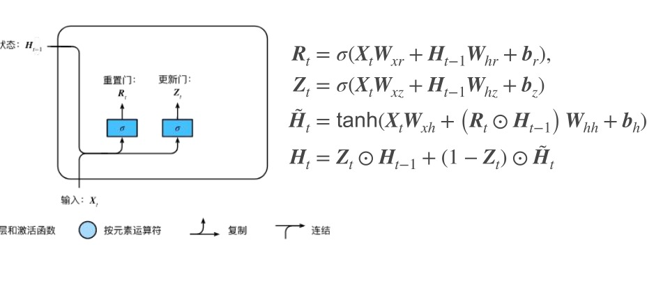
动手试一试：更新门的作用——拖动滑块改变更新门 \(Z\) 的大小，看隐含状态如何在"保留过去"与"采用现在"之间切换：
六、长短期记忆网络（LSTM）
6.1 三个门
长短期记忆网络（Long Short-Term Memory，LSTM）比 GRU 出现得更早（1997 年 Hochreiter & Schmidhuber），设计也更精细：它有三个门，并且把"记忆"拆成两条线——记忆细胞 \(C_t\)（长期记忆的主干道）和隐含状态 \(h_t\)（对外输出）：
| 门 | 职责 |
|---|---|
| 遗忘门 \(F_t\) | 控制上一时刻的记忆细胞保留多少（值收缩向 0 = 遗忘） |
| 输入门 \(I_t\) | 控制当前输入有多少写入记忆细胞（接近 0 = 忽略输入） |
| 输出门 \(O_t\) | 控制记忆细胞有多少暴露给隐含状态输出 |
三个门的计算方式与 GRU 相同（输入 \(x_t\) 与 \(h_{t-1}\)，sigmoid 激活），各有一套独立权重：
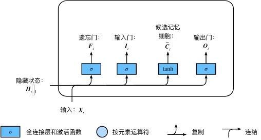
6.2 记忆细胞与隐含状态
与 GRU 的候选状态类似，LSTM 先算候选记忆细胞：

然后记忆细胞做"选择性遗忘 + 选择性写入"：
这又是一个按元素插值：遗忘门决定旧记忆留多少，输入门决定新内容写多少。只要遗忘门保持接近 1，早期信息就能沿记忆细胞几乎无损地传很远——这条"高速公路"是 LSTM 抗梯度消失的核心设计。
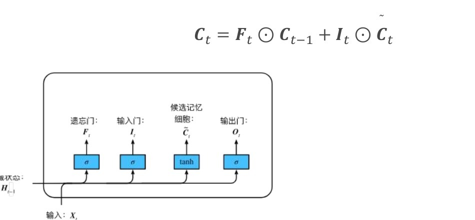
最后，输出门决定把记忆的哪部分"公布"为隐含状态：
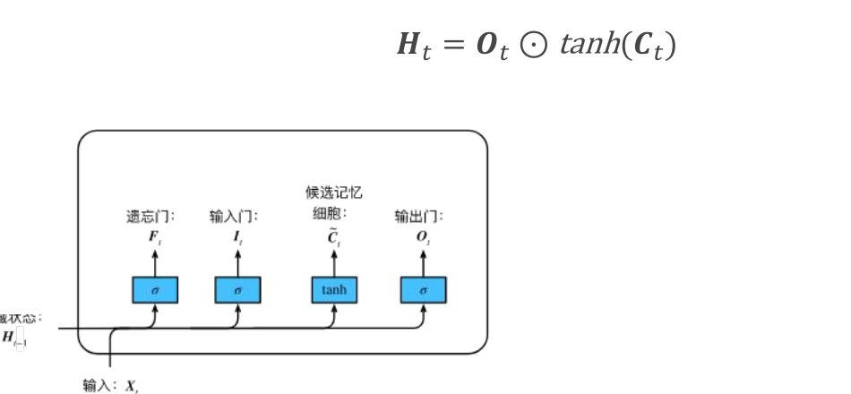

6.3 LSTM vs GRU
| GRU | LSTM | |
|---|---|---|
| 门数量 | 2 个（重置、更新） | 3 个（遗忘、输入、输出） |
| 状态 | 只有隐含状态 \(h_t\) | 记忆细胞 \(C_t\) + 隐含状态 \(h_t\) |
| 参数量 | 较少，训练更快 | 较多，表达更细 |
| 提出时间 | 2014 年（Cho 等） | 1997 年（Hochreiter & Schmidhuber） |
| 实际选择 | 性能通常相近；数据少/算力紧时先试 GRU，追求极致效果时试 LSTM | |
七、双向与深度循环神经网络
7.1 "未来"的重要性
看这三道填空题：
我 _____ 。
我 _____ 非常饿。
我 _____ 非常饿，我可以吃下一只猪。
合适的填词可能是"饿""不饿/不是很饿""非常"。同一个空，答案完全取决于后文——可是到目前为止的 RNN 只能看到"上文"，读到空位时后文还没出现。很多任务（词性标注、实体识别、语音识别）都需要同时利用两个方向的上下文，这就是双向循环神经网络（Bidirectional RNN）的动机。
7.2 双向 RNN
做法很直接：两个 RNN 背靠背——一个从前往后读，一个从后往前读，每个时刻把两个方向的隐含状态拼起来再生成输出：
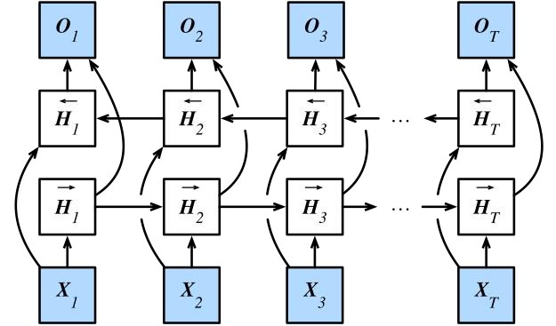
7.3 深度 RNN
RNN 也可以像 MLP 一样往深里堆：第一个 RNN 层的输出序列作为第二个 RNN 层的输入，依此类推。每层学到的特征抽象程度不同——底层捕捉局部模式（词组），高层捕捉更长程的结构（句法、语义）：
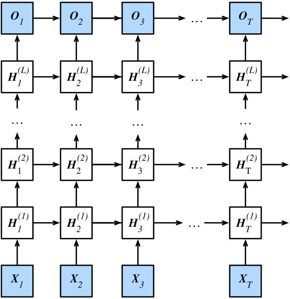
八、本讲小结与自测
8.1 知识要点回顾
| 主题 | 必须掌握的内容 |
|---|---|
| RNN 结构 | 隐含状态 \(h_t\) 是记忆的载体；更新公式；去掉循环项退化为 MLP；参数共享 |
| RNN 类型 | 一对一/一对多/多对一/两种多对多的应用场景 |
| 困惑度 | 平均交叉熵的指数；1 最好；理解为"平均犹豫的候选数" |
| 语言模型实现 | one-hot → 嵌入矩阵 → RNN → softmax；word2vec/GloVe 预训练 |
| BPTT | 沿时间展开；梯度连乘导致消失/爆炸；梯度剪裁公式；截断 BPTT 只截梯度不截记忆 |
| GRU | 重置门、更新门的作用；\(h_t = Z_t \odot h_{t-1} + (1-Z_t)\odot\tilde{h}_t\) |
| LSTM | 三门分工；记忆细胞 \(C_t = F_t \odot C_{t-1} + I_t \odot \tilde{C}_t\) 是"长期记忆高速公路" |
| 双向/深度 | 双向 RNN 适合理解类任务、不适合实时生成；深度 RNN 沿时间+深度两维传播 |